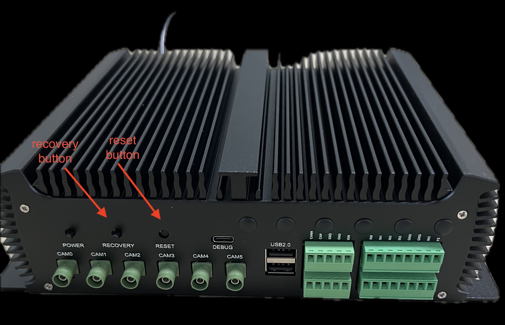

Jetpack 5
setup telelian Linux for Tegra
Important
지원하는 Linux for Tegra version은 아래와 같습니다.
아래의 setup 의 L4T_VERSION부분을 원하는 버전으로 맞춰서 사용하시기 바랍니다.
- 35.4.1 (Jetpack 5.1.2)
- 36.0 (Jetpack 5.1.4)
출고시의 id와 password는 아래와 같습니다.
- id : avs
- password : telelian
Warning
host는 ubuntu 20.04 또는 22.04를 사용하세요.
Danger
apt upgrade, apt dist-upgrade 를 하면 안됩니다.
kernel image와 device tree, device driver는 avs100,101,200에 맞게 빌드되어 셋팅되어 있습니다.
apt upgrade, apt dist-upgrade를 하게 되면 nvidia Jetson devkit용으로 파일이 덮어써져 부팅이 안됩니다.
setup
sudo apt update
sudo apt install -y git-core build-essential libncurses5-dev \
bc bison flex libssl-dev fakeroot \
device-tree-compiler qemu-user-static debootstrap \
sshpass abootimg libxml2-utils \
nfs-kernel-server xmlstarlet
L4T_VERSION=35.6
BASE_PATH=$HOME/l4t_ws/$L4T_VERSION
mkdir -p $BASE_PATH
cd $BASE_PATH
wget https://tlln.xyz/telelian-l4t/jp5/$L4T_VERSION/l4t_prebuilt.tar.gz -O $BASE_PATH/l4t_prebuilt.tar.gz
# Linux_for_Tegra download
case ${L4T_VERSION} in
35.4.1)
L4T_LINK=https://developer.nvidia.com/downloads/embedded/l4t/r35_release_v4.1/release/jetson_linux_r35.4.1_aarch64.tbz2
ROOTFS_LINK=https://developer.nvidia.com/downloads/embedded/l4t/r35_release_v4.1/release/tegra_linux_sample-root-filesystem_r35.4.1_aarch64.tbz2
OVERLAY_LINKS=(
https://developer.nvidia.com/downloads/embedded/l4t/r35_release_v4.1/overlay_jaoi_low_temp_35.4.1.tar.gz
https://developer.nvidia.com/downloads/embedded/l4t/r35_release_v4.1/overlay_pcn210361_pcn210100_r35.4.1.tbz2
)
SOURCE_TAG=jetson_35.4.1
;;
35.6)
L4T_LINK=https://developer.nvidia.com/downloads/embedded/l4t/r35_release_v6.0/release/jetson_linux_r35.6.0_aarch64.tbz2
ROOTFS_LINK=https://developer.nvidia.com/downloads/embedded/l4t/r35_release_v6.0/release/tegra_linux_sample-root-filesystem_r35.6.0_aarch64.tbz2
SOURCE_TAG=jetson_35.6
;;
*)
echo "L4T_VERSION is not supported"
exit 1
;;
esac
echo "Downloading Linux_for_Tegra"
wget ${L4T_LINK}
tar xpf ${L4T_FILE}
if [ -n "${OVERLAY_LINKS}" ]; then
echo "Downloading overlays"
for overlay in ${OVERLAY_LINKS[@]}; do
echo "Downloading ${overlay}"
wget ${overlay}
tar xpf ${overlay}
done
fi
echo "Downloading rootfs"
wget ${ROOTFS_LINK}
cd Linux_for_Tegra/rootfs
sudo tar xpf ${ROOTFS_FILE}
sudo ./apply_binaries.sh
# sudo ./tools/l4t_create_default_user.sh -u <username> -p <password> -n <hostname> -a --accept-license
# ex)
sudo ./tools/l4t_create_default_user.sh -u avs -p telelian -n avs-teleian -a --accept-license
cd $BASE_PATH
sudo tar xpf l4t_prebuilt.tar.gz
# depmod
cd $BASE_PATH/Linux_for_Tegra
sudo ./make_depmod.sh
flash to target
recovery mode
Important
Flash 하기 전 Recovery mode로 진입해야 합니다.
recovery usb와 Linux_for_Tegra가 설치된 ubuntu PC를 연결합니다.
Power on 상태에서 아래 사진에 표시된 recovery button을 누른 상태에서 reset button을 눌렀다 뗀 후 2-3초 후에 recovery button에서 손을 뗍니다.
avs100

avs101


avs200
flash
Note
아래 명령어에서 보이는 경로는 위의 setup에서 설치된 경로이며 다른 경로를 사용했을 경우 Linux_for_Tegra 아래에서 작업하시면 됩니다.
flash를 위한 명령어는 아래와 같습니다.
공통
L4T_VERSION=35.6
BASE_PATH=$HOME/l4t_ws/${L4T_VERSION}
L4T_PATH=$BASE_PATH/Linux_for_Tegra
cd $L4T_PATH
# host pc 에서 한번만 실행하면 됩니다.
sudo ./tools/l4t_flash_prerequisites.sh
avs100
# 최초 1회 flash
sudo ./flash_avs100_nvme.sh
# system image가 생성된 후 같은 이미지를 플래시 하는 경우
sudo ./flash_avs100_nvme_flash_only.sh
avs200
emmc
# 최초 1회 flash
sudo ./flash_avs200_emmc.sh
# system image가 생성된 후 같은 이미지를 플래시 하는 경우
sudo ./flash_avs200_emmc_flash_only.sh
nvme
# 최초 1회 flash
sudo ./flash_avs200_nvme.sh
# system image가 생성된 후 같은 이미지를 플래시 하는 경우
sudo ./flash_avs200_nvme_flash_only.sh
target device 설정
Camera Overlay 설정
Important
Camera Overlay 설정이 정상적으로 설정되어 있어야 카메라를 사용할 수 있습니다.
최초 부팅 후 설정
Note
target device가 부팅된 후 터미널에서 설정합니다.
group설정
gpio, i2c, tty 장치들을 non-sudo로 실행하기 위해 설정합니다.
sudo usermod -aG gpio,i2c,dialout <user-id>
nvpmodel 설정
orin의 성능 설정을 최대로 설정합니다.
설정 후 yes를 입력하면 재부팅됩니다.
sudo nvpmodel -m 0
jtop 설치
device의 상태를 모니터링하기 위해 설치합니다.
sudo apt install python3-pip
sudo -H pip3 install -U jetson-stats
sudo systemctl restart jtop
nvidia-jetpack 설치
CUDA toolkit, cuDNN, TensorRT, OpenCV, VPI, nvidia container runtime, 등등이 포함된 패키지
sudo apt install nvidia-jetpack